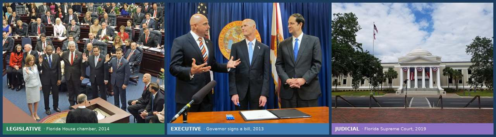
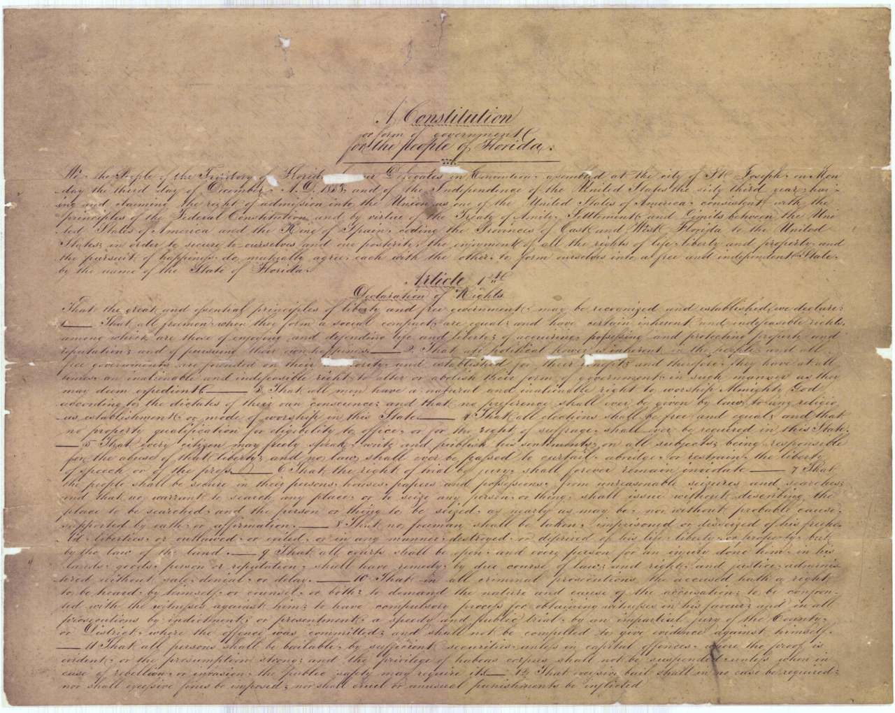

| Place | A court building, like the Florida Supreme Court |
| For | Your teacher, still stuck inside Canvas |
| Field historian | You |


Scout a Court Building

In your video, you say these 2 sentences:
- 1This court building has ___.
- 2The judicial branch's job is to ___.
Practice now. Say both before the timer ends.
In VR, this page is on the Canvas tab.
Open the On-Demand app. Click Explore. Type Supreme in Filter environments. Click Supreme Court, then Begin Solo.
Move with the thumbstick. Look at the front of the building, the steps and the tall columns. Stop where you can see all of them.
Open your menu, click Library, then Camera. Fit the building in the tablet. Click Record video, say your 2 sentences, and click it again to stop.
On the Canvas tab, pick 4.12.02 VR · Inside a Court Building. Click Choose from My Files, pick your video, click Use this file, then Submit to Canvas. Look for the green Submitted tag.
Press the Meta button, then click Quit. Check that your video is in the Canvas assignment. Not there? See Having trouble in VR?
🛟 Having trouble in VR?Steps with pictures, and a how-to video
These pictures come from other maps. Your map will be Supreme Court, but the buttons are the same.
🖥️ First time only: connect Canvas (on your computer)

Go to xr.optimaed.com. Log in with your VR login.

Click Connect to Canvas. Log in to Canvas, then click Authorize. You will see Canvas connection completed.

Click Canvas on the left and pick our class. You only do this one time.
📄 Only if the assignment has a file

Open the assignment. Click Open in Canvas to download the file. Then click My Files and Upload File.
🥽 In the headset

Click Explore. Type the map name in Filter environments.

Click the map, then click Begin Solo.

Press the top button on your right controller. Click the Canvas tab and pick our assignment. Tip: point at a mint side grip and squeeze to pull the tablet to your hand.

Click Models. Type the gray word in the search box. Click a model to bring it out.

Grab a model with the palm trigger. Use both palm triggers to make it bigger or smaller.

Click Library, then Files. Pick your file to place it.

Click Library, then Camera. Move the tablet until the place fits. Click Record video and talk. Click it again to stop.

Click the Canvas tab and pick our assignment. Click Choose from My Files, pick your newest video, then Use this file.

Click Submit to Canvas. Look for the green Submitted tag. To leave, press the Meta button, then click Quit.
🔁 Didn’t work in VR? Two other ways

Go to xr.optimaed.com and click Canvas. Pick our assignment, click Choose from My Files, pick your video and submit it.
Your photos and videos save to My Files at xr.optimaed.com. You can also download your video there and upload it to the Canvas assignment yourself.
Spin the Branches